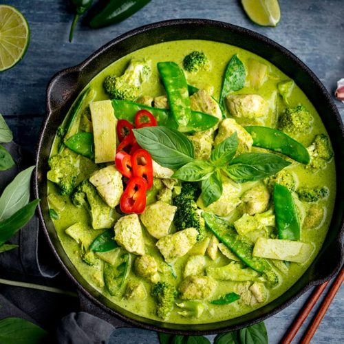
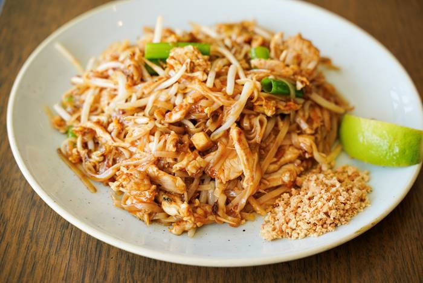
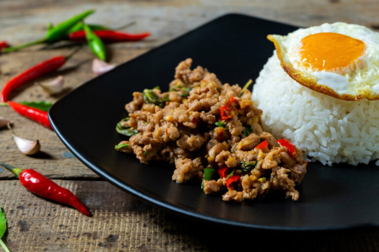
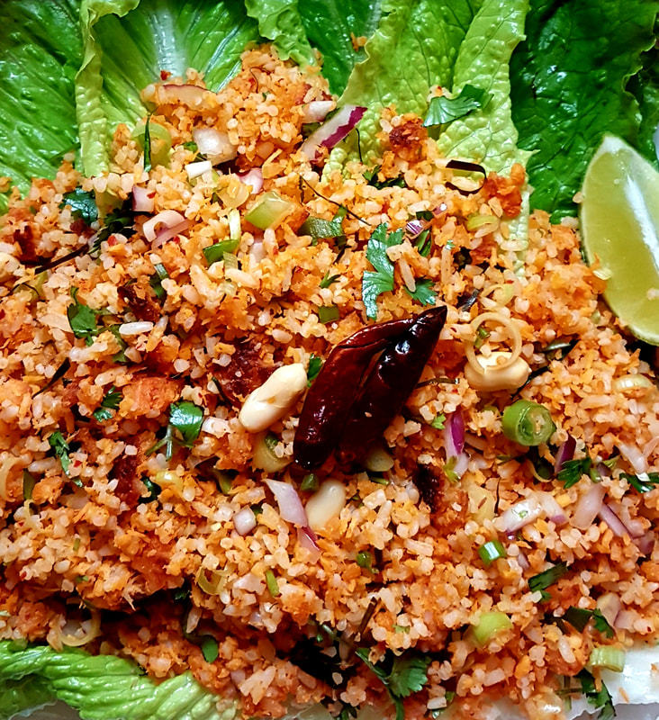
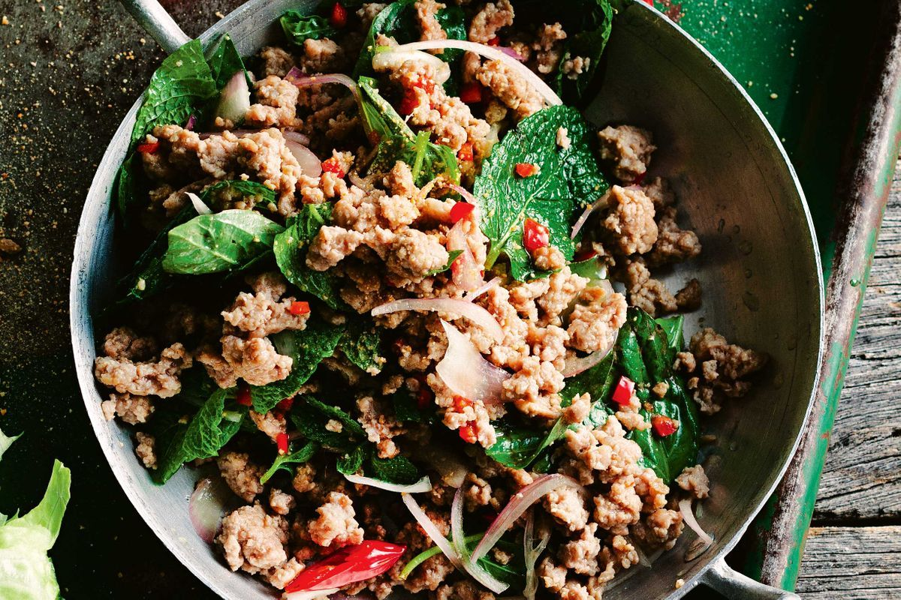

Our Menu
-

Green Curry
Curry is a dish composed of meat and vegetables, or just vegetables, in a sauce containing hot spices. It is usually eaten with rice
-

Pad Thai
Thai dish consisting of rice noodles stir-fried usually with any of various additional ingredients (such as bean sprouts, peanuts, chicken, shrimp, and egg)
-

Pad See Ew
Pad See Ew literally means “soy sauce stir-fried noodles.” It is a wide rice noodle dish mixed with protein, vegetables, and a sweet brown sauce
-

Pad Krapow
Thai basil chicken is a stir-fry dish made with finely chopped or ground chicken cooked with chile peppers, garlic, and shallots, and seasoned with a sweet and salty sauce and finished with fresh basil.
-

Nam Khao
Nam Khao is a mixture of crispy deep-fried rice with soured pork, dried coconut, red curry, and fresh herbs. This creates a dish with bright and bold flavors like you've never tasted before.
-

Larb
A popular Laotian or Thai spicy diced-meat salad with ground, chopped, or minced meat and vegetables.